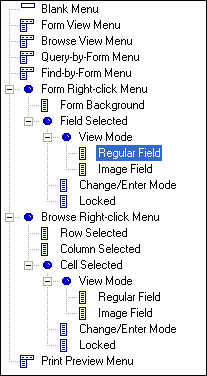
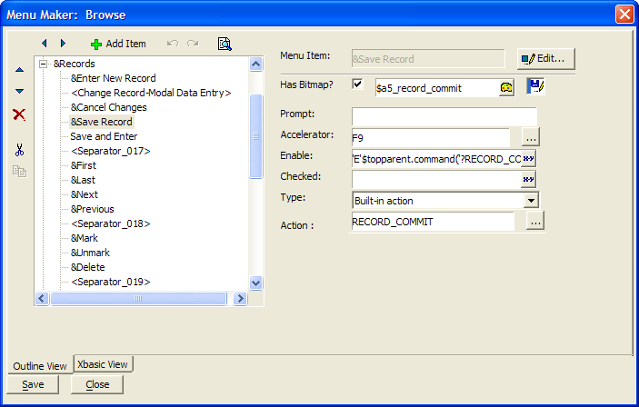
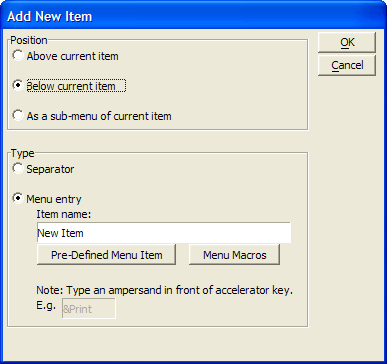
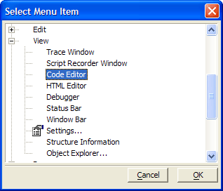
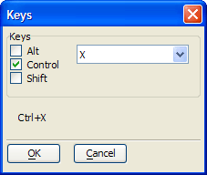
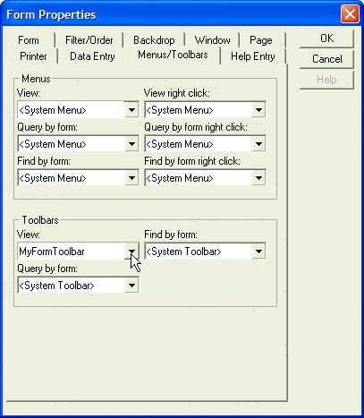

How to Design a Custom Menu
To design a custom menu:
Activate the Control Panel and display the Code tab.
Click New and select Menu or select Code > New > Menu.
To give you a head start, you can start with one of the standard menus, or you can start from scratch with a blank menu. Select the menu type. The following menu types are available:

If the menu was previously modified, then you have the option of using it as is, or using the original default version of the menu. Check or clear Use customized menu? Alpha Anywhere opens the Menu Maker dialog box.

The Menu Maker displays the menu as an outline. To see the contents of the menu, expand the outline by clicking the + signs to the left of the menu items. Once a menu item is open, you can close it by clicking on the - sign to its left.
The right hand side of the screen shows the action associated with the menu entry. For example, the current selection in the picture above is "&Save Record". The action associated with this menu item is to play the built-in Records > Save command.
Place the cursor on an existing menu item. Click
 to display the Add New Item dialog box. Picture
to display the Add New Item dialog box. Picture
{kind=link}

Set the Position of the new entry. The options are:
"Above the current item"
"Below the current item"
"As a sub-menu of the current item"
Optionally, if you clicked Above current item or Below current item, you may click Separator to insert a separator line.
You have three options for adding new menu entries.
Optionally, enter the text of the new menu entry into the Item name field.
Optionally, place an ampersand "&" in front of the character that you would like to use as an accelerator key.
Click OK.
Optionally, click Pre-Defined Menu Item. If you have not already selected a context for the new menu, you will see an error message.
Click OK to display the Pre-Defined Menu Item dialog box.
Click Set Context... and select one of the following options.
- "Form View"
- "Browse View"
- "Print Preview"
Click Pre-Defined Menu Item to display the Select Menu Item dialog box.

Select a menu entry and click OK to add the item or Cancel to discard your selection.
Optionally, click
 Edit to display the Edit
Menu Item dialog box.
Edit to display the Edit
Menu Item dialog box.Optionally, change the text of the menu entry.
Optionally, click Menu Macros to replace the current entry with a menu macro.
Click OK to continue or Cancel to discard your inputs.
Optionally, check Has Bitmap? to add an image to the menu entry.
Click
 to display the <span class=Screen>Insert Image</span> dialog box.
to display the <span class=Screen>Insert Image</span> dialog box.Select an image.
Click Insert to continue or Cancel to discard your selection.
Optionally, enter bubble help text in the Prompt field.
Optionally, define an accelerator key sequence in the Accelerator field.
Click to display the Keys dialog box.
Check Alt, Control, and/or Shift and select a key from the drop-down list.
Click OK to insert the key sequence or Cancel to discard your inputs.
Optionally, enter an expression in the Enable field that defines when the menu entry will be available. The expression must evaluate to TRUE (.T.) or FALSE (.F.).
Click
 to display the Expression dialog
box.
to display the Expression dialog
box.If the Expression field at the top of the dialog box is grayed out, click Change Table/Set... to display the Table/Set Name dialog box.
Select a table or set and click OK.
Enter an expression. Click
to display the <span class=Screen>Expression Builder</span> to help you define the expression.Click OK to continue or Cancel to discard your selection.
Optionally, enter an expression in the Checked field that defines when the menu entry will be checked. The expression must evaluate to TRUE (.T.) or FALSE (.F.).
Click
to display the Expression dialog
box.If the Expression field at the top of the dialog box is grayed out, click Change Table/Set... to display the Table/Set Name dialog box.
Select a table or set and click OK.
Enter an expression. Click
to display the <span class=Screen>Expression Builder</span> to help you define the expression.Click OK to continue or Cancel to discard your selection.
Select the Type of action to run when the menu item is clicked. The options are:
- "Built-in action"
- "Run a saved script"
- "Xbasic"
If you selected "Built-in action" in step 22, click Select... to display the Built-in Action dialog box.
Click OK to display the Pre-Defined Menu Item dialog box.
If you have not already selected a context for the new menu, the Select Action... button will be hidden.
Click Set Context... and select one of the following options.
- "Form View"
- "Browse View"
- "Print Preview"
Click Select Action... and select a menu entry from the resulting menus.
Click OK.
If you selected "Run a saved script" in step 22, click
 to select a script.
to select a script.Optionally, click
to edit the saved script.Make your changes and click
 to return to the Menu Maker.
to return to the Menu Maker.If you selected "Xbasic", enter the Xbasic commands in the text box.
You can press the F4 key to compile your script to test if you have made any syntax errors.
Click
to edit the saved script in a larger window.Click Save.
Enter the name of the new menu in the Save Menu As dialog box.
Click OK.

Click Menu Macros and make a selection from the resulting menu. Note : Menu macro selections do not appear when you click
 to
preview the menu.
to
preview the menu.
Click
 or
or  to promote or demote an entry in the
hierarchy of entries.
to promote or demote an entry in the
hierarchy of entries.Click
 or
or  to change the location of an entry in
the menu.
to change the location of an entry in
the menu.Click
 to remove an entry.
to remove an entry.Click
 and
and  to cut and paste an entry from one location
to another.
to cut and paste an entry from one location
to another.
Attaching the Menu to the Layout
Alpha Anywhere lets you specify drop-down menus for the following form modes:
View mode (i.e., viewing, entering, or editing records)
Query by Form mode
Find by Form mode
For example, if you specify a custom drop-down menu for View mode and Query by Form mode, the view menu will display when the form is in View mode. If you select Query by Form, the menu will change to the specified query menu. If no menu is specified for Query by Form mode, then when the user selects Query by Form, the standard menus are displayed.
Design the custom menu and save it.
Place the layout in edit mode.
Right click on the form, browse or report (letter, label) background and select Properties... .
In the resulting Properties dialog, display the Menus/Toolbars tab.
Select the name of the menu to use in one of the menu list boxes. Specify "
" to turn off a menu, or specify " " to use the system default menu. See Custom Menus for Various Forms Modes.

Click OK to exit from the Properties dialog.
Click
 .
.
See Also
Display a Pick-List of Scripts, Menu Capabilities, Changing Custom Menus at Runtime, Methods for Controlling Menus at Runtime